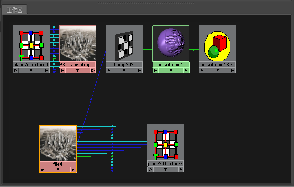

您可以在 Maya 中将 PSD 节点自动转化为文件纹理。绘制完成后，可以轻松将着色网络中的大型 PSD 文件替换为小型文件纹理。
将 PSD 节点转化为文件纹理
- 在 Hypershade 中，选择 PSD 节点（在我们的示例中为 PSD_anisotropic1）。
- 在“Hypershade”菜单中选择编辑 > 将 PSD 转化为文件纹理(Edit > Convert PSD to File Texture)（Maya 软件）。
将自动创建文件纹理节点。新文件纹理节点将替换网络中的 PSD 文件，同时保持之前的连接。
